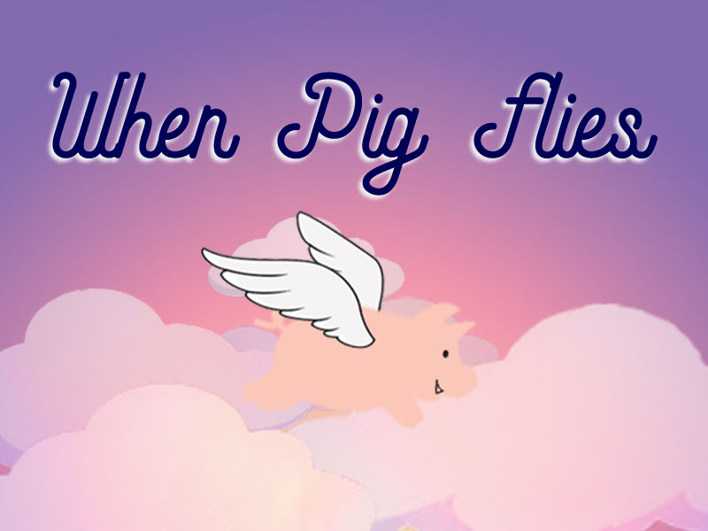

Computer Science Projects
Built an object oriented raytracer (C++) including Blinn-Phong and Cook-Torrence BRDF implementations, reflection and refraction, super sampling, object transformations, bounding volume hierarchy, Monte Carlo global illumination, soft shadows, and caustics.
Built a multi-level Javascript game (utilizing Phaser libraries) in collaboration with Casey Albert, Kalea Louie, Erica Solum. My main contribution to the team was the framework/platform that the rest of the game was built on (for example, functionality to render and switch between frames).
